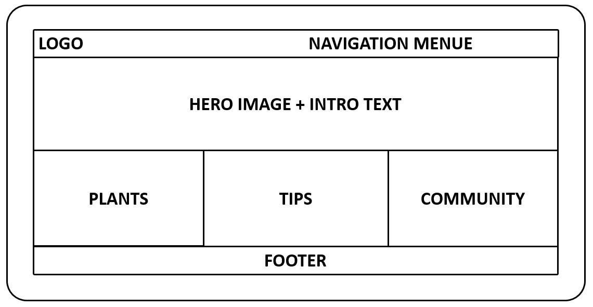
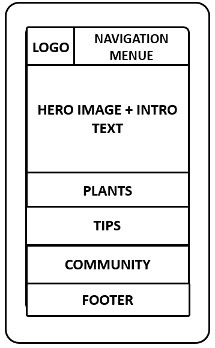

Site Name
Urban Gardening for Beginners
This name was chosen because it clearly communicates the target audience (beginners) and the subject (urban gardening). It is simple, descriptive, and SEO-friendly.
Optional domain availability: urbangardeningforbeginners.org
Site Purpose
The site provides a beginner-friendly hub for city dwellers who want to grow plants in small spaces. It offers plant guides, tool recommendations, gardening tips, and a community space for sharing experiences. The goal is to promote sustainable living and empower users to start gardening with limited resources.
Scenarios
- “Which plants are easiest to grow on a balcony with partial sunlight?”
- “What tools do I need to start a small herb garden indoors?”
- “How can I connect with other urban gardeners in my area?”
Color Scheme
Primary Color: #2E7D32 (Dark Green) – used for headings, accents, and buttons to represent nature and sustainability.
Secondary Color: #F4F4F4 (Light Gray) – used for background areas to provide contrast and readability.
Accent Color: #FFA726 (Orange) – used sparingly for call-to-action buttons and highlights.
Typography
Font 1: Segoe UI – used for body text for readability and modern feel.
Font 2: Merriweather – used for headings to provide a friendly, approachable style.
Wireframe
Below are simple wireframe sketches for the home page layout:
Desktop/Tablet View

Mobile View
